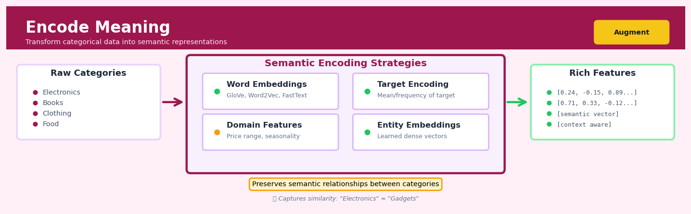
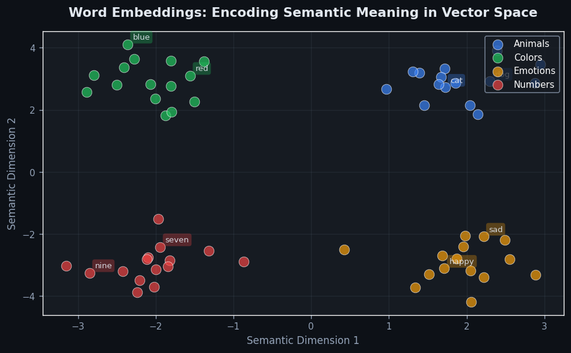
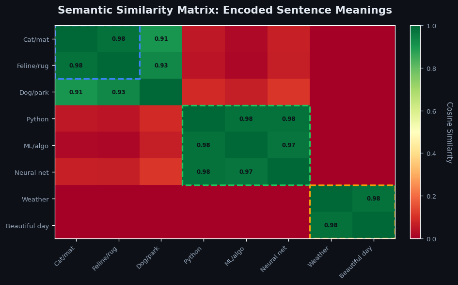

Encode Meaning#


The biggest mistake with semantic encoding is treating all categorical features the same way. High-cardinality categories like product IDs benefit massively from entity embeddings, while low-cardinality features like day-of-week often perform better with simple one-hot encoding. Always validate that your encoding actually captures meaningful relationships by checking nearest neighbors in the embedding space before deploying to production.
The 60-Second Version#
What it does: Encode Meaning converts text into numbers that computers can compare to find which documents, questions, or messages are talking about similar things.
When to use it: You have text data—customer reviews, support tickets, documents, or search queries—and need to group similar items, find relevant matches, or detect patterns at scale.
What you get back: A table where each piece of text becomes a row of numbers (a vector) that you can measure distances between, enabling search, clustering, recommendation, and classification.
At a Glance
Difficulty |
Easy |
Typical runtime |
Seconds on 100K rows |
What you bring |
Text data (any length: words, sentences, or documents) |
What you get |
Numerical vectors (typically 100–1500 dimensions per text) |
Heuristix bucket |
Augment — AI & Language Intelligence |
The encoding is only as good as the model you choose—generic models miss domain-specific meaning, so match your encoder to your industry and use case.
Learning Objectives#
After reading this chapter, a business user will be able to:
Identify when semantic similarity matters more than keyword matching in applications like customer support routing, content recommendation, or duplicate detection.
Explain to stakeholders why two pieces of text receive high similarity scores even when they share no common words, using concrete examples from your domain.
Decide whether to invest in custom embeddings versus pre-trained models by evaluating the trade-off between domain specificity and implementation cost for your use case.
After reading this chapter, a data scientist will be able to:
Generate embeddings using both pre-trained models and domain-specific fine-tuning approaches, while handling variable-length inputs and out-of-vocabulary terms appropriately.
Optimize embedding dimension, context window size, and similarity metrics to balance between computational cost, memory footprint, and task-specific accuracy.
Diagnose embedding quality issues such as semantic drift, polysemy collapse, and cultural bias by applying intrinsic evaluation metrics and visualizing nearest-neighbor relationships.
Overview#
Encode Meaning transforms raw text into dense numerical vector representations—known as embeddings—that capture semantic relationships between words, sentences, or documents. This technique enables machines to reason about meaning by positioning conceptually similar texts close together in a high-dimensional vector space, while dissimilar texts remain distant. It belongs to the family of representation learning methods within natural language processing, serving as the foundational bridge between human language and machine-processable numerical features.
When to Use This#
Use this when:
Building semantic search systems — When users need to find documents based on meaning rather than exact keyword matches, embeddings enable retrieval of conceptually relevant results even when query terms differ from document vocabulary.
Clustering unstructured text data — When you have thousands of customer complaints, support tickets, or survey responses and need to discover natural groupings based on topical similarity rather than predefined categories.
Preparing text features for machine learning — When text columns must be incorporated into predictive models (classification, regression, anomaly detection), embeddings provide fixed-length numerical representations that standard algorithms can process.
Measuring document similarity — When the business question is “how similar are these two pieces of text?” embeddings provide a principled, quantifiable answer through vector distance metrics.
Deduplicating records with text fields — When near-duplicate detection requires fuzzy matching on product descriptions, addresses, or names, embedding similarity can identify matches that exact string comparison would miss.
Building recommendation systems — When recommending content, products, or services based on textual descriptions, embeddings enable “more like this” functionality by finding items with similar semantic profiles.
Cross-lingual applications — When multilingual embeddings are employed, texts in different languages with the same meaning will occupy similar vector positions, enabling language-agnostic analysis.
Do NOT use this when:
Exact string matching suffices — If your use case requires precise keyword presence or pattern matching (e.g., regulatory compliance checking for specific terms), embeddings add unnecessary complexity.
Interpretability is paramount — Embedding dimensions have no human-interpretable meaning; if stakeholders must understand exactly why two texts are considered similar, consider topic models or keyword-based approaches instead.
Computational resources are severely constrained — Modern embedding models can be computationally expensive; for extremely high-throughput, low-latency applications, lighter-weight representations may be necessary.
Questions This Answers#
Understanding Customer Intent and Behavior#
Why are customers contacting support when they just bought the product last week?
Which customer complaints are actually talking about the same underlying issue, even though they use different words?
Are the product reviews mentioning “breaks easily” related to the ones saying “poor quality” and “doesn’t last”?
What are customers really asking for when they search our help center—and are we showing them the right articles?
Can we tell which support tickets are urgent without reading every single one?
Content Discovery and Organization#
How do we surface relevant knowledge base articles when employees describe problems in their own words?
Which of our 10,000 product descriptions are too similar to each other and might be confusing customers?
When someone searches for “affordable family sedan,” why aren’t we showing them our best matches instead of just cars with those exact words?
Can we automatically route incoming customer emails to the right department without creating hundreds of keyword rules?
Which historical customer conversations should our agents see when they’re handling a new case?
Efficiency and Automation#
How much time are our analysts spending manually categorizing documents that sound similar but use different terminology?
Could we reduce our translation costs by identifying which support articles in English already have semantic matches in Spanish?
What’s the fastest way to find all contracts mentioning liability clauses without searching for every possible legal term?
Can we deduplicate our CRM records when customers write their company names differently every time?
Should we tag this new customer inquiry as billing, technical, or account management—and what’s our confidence level?
How It Works#
Imagine you’re organizing a massive library where books aren’t shelved alphabetically, but by meaning. A book about “puppies playing in parks” would sit right next to “dogs running outdoors,” even though they share no words in common. Meanwhile, “banks with deposits” would be shelves away from “river banks,” despite the identical word. You’d achieve this by assigning each book a specific location using multiple measurements—not just one Dewey Decimal number, but perhaps 300 different coordinates measuring themes like “animal-ness” (high for dogs, zero for banks), “outdoor-ness,” “finance-ness,” and hundreds of other subtle dimensions. Books about similar concepts would cluster together in this multi-dimensional space, making it trivial to find related content even when the exact words differ.
BEFORE: Raw Text AFTER: Embeddings in Vector Space
"The dog ran fast" ────┐
"Puppy played" ────┼──→ [0.8, 0.2, -0.1, ...] ●
"Bank approved loan"────┘ [0.7, 0.3, -0.2, ...] ● ←─ Close together
↑ (similar meaning)
|
300-dimensional
vectors
|
↓
[−0.1, −0.6, 0.9, ...] ◆
↑
Far away
(different meaning)
┌────────────────────────────────────────────────┐
│ "dog" and "puppy" → nearby points in space │
│ "dog" and "bank" → distant points in space │
└────────────────────────────────────────────────┘
Step 1: Break text into tokens. The system first splits your text into smaller pieces—usually words or word fragments. The sentence “Dogs love parks” becomes three tokens: “Dogs,” “love,” and “parks.” These tokens are the building blocks that will each receive their own numerical representation.
Step 2: Assign each token a unique vector. Every token gets converted into a list of numbers—typically 300 to 1,000 numbers long. Think of this as a long address in a multi-dimensional city. Initially, these numbers might be random, but through training they’ll become meaningful coordinates.
Step 3: Train on massive text collections. The system reads millions of sentences, learning patterns: words that appear in similar contexts should get similar vectors. It notices “dog” and “puppy” both appear near words like “pet,” “bark,” and “tail,” so it gradually adjusts their vectors to be nearby in space. Meanwhile, “bank” (financial) appears near “loan” and “money,” earning a completely different vector.
Step 4: Calculate context-aware representations. For whole sentences, the system doesn’t just average word vectors. Modern systems read the entire sentence and adjust each word’s vector based on surrounding words. The word “bank” gets different vectors in “river bank” versus “bank loan” because the context reshapes its meaning.
Step 5: Position text in semantic space. The final output is a single point in high-dimensional space representing your text’s meaning. Texts with similar meanings cluster together; dissimilar ones sit far apart. You can now measure meaning by measuring distance.
The key insight: By representing words as coordinates in high-dimensional space rather than discrete symbols, machines can perform mathematical operations on meaning itself—measuring semantic similarity becomes as simple as measuring geometric distance.
The Intuition#
Consider how a librarian organises a vast collection of books. Rather than shelving volumes alphabetically by title—which would place a cooking cookbook next to a quantum physics textbook simply because both start with “C”—a skilled librarian groups books by subject matter. Cookbooks sit with other culinary texts, physics volumes cluster with mathematics and engineering, and fiction is organised by genre. The physical location of a book on the shelves encodes something meaningful about its contents and its relationships to other books.
Encode Meaning performs this same conceptual organisation, but in a mathematical space rather than a physical library. Instead of shelf positions, each piece of text receives coordinates in a high-dimensional vector space—perhaps 384 or 768 dimensions. Texts about similar topics, expressing similar sentiments, or discussing related concepts will have coordinates that place them near each other in this abstract space. A customer review complaining about “terrible delivery times” will sit close to another review mentioning “shipping took forever,” even though they share almost no words in common. The embeddings capture the underlying meaning, not just the surface vocabulary.
The power of this approach becomes apparent when we consider what we can do once text exists as vectors. We inherit the entire toolkit of linear algebra and geometry. Finding similar documents becomes computing distances between points. Clustering related content means applying k-means or DBSCAN to the vectors. Visualising the semantic landscape of a corpus uses dimensionality reduction to project the high-dimensional space down to two or three dimensions. Classification becomes drawing decision boundaries in the embedding space. The abstract, slippery nature of “meaning” becomes concrete, measurable, and manipulable.
Modern embedding models learn these representations from massive text corpora. By observing billions of sentences, they learn that “doctor” and “physician” appear in similar contexts, that “happy” is more similar to “joyful” than to “automobile,” and that “bank” can mean either a financial institution or a riverbank depending on surrounding words. This contextual learning produces embeddings that capture nuanced semantic relationships that would be impossible to encode through hand-crafted rules.
The Mathematics#
Formal Problem Setup#
Let \(\mathcal{V}\) denote a vocabulary of \(|\mathcal{V}|\) unique tokens. A text document \(d\) is a sequence of tokens \((t_1, t_2, \ldots, t_n)\) where each \(t_i \in \mathcal{V}\). The embedding function \(\phi: \mathcal{D} \rightarrow \mathbb{R}^k\) maps from the space of all possible documents \(\mathcal{D}\) to a \(k\)-dimensional real vector space.
The fundamental desideratum is that semantically similar texts should map to nearby vectors:
where geometric similarity is typically measured by cosine similarity:
Word Embedding Foundations#
The theoretical foundations rest on the distributional hypothesis: words appearing in similar contexts have similar meanings. For word-level embeddings, this is formalised through the skip-gram objective (Word2Vec):
where \(T\) is the corpus length, \(c\) is the context window size, and the probability is modelled as:
Here \(\mathbf{v}_w\) and \(\mathbf{v}'_w\) are the input and output vector representations of word \(w\).
Sentence and Document Embeddings#
For document-level embeddings, transformer-based models have become standard. Given input tokens \(\mathbf{X} = (x_1, \ldots, x_n)\), the self-attention mechanism computes:
where \(\mathbf{Q} = \mathbf{X}\mathbf{W}^Q\), \(\mathbf{K} = \mathbf{X}\mathbf{W}^K\), \(\mathbf{V} = \mathbf{X}\mathbf{W}^V\) are query, key, and value projections, and \(d_k\) is the key dimension. The scaling factor \(\sqrt{d_k}\) prevents dot products from growing too large in magnitude.
The final document embedding is typically obtained by mean pooling over token embeddings:
where \(\mathbf{h}_i^{(L)}\) is the final-layer hidden state for token \(i\).
Contrastive Learning Objective#
Modern sentence embedding models (e.g., Sentence-BERT) are trained with contrastive objectives. Given anchor \(a\), positive example \(p\), and negative example \(n\):
where \(\epsilon\) is a margin hyperparameter.
Alternatively, the InfoNCE loss for a batch of \(N\) positive pairs \((a_i, p_i)\):
where \(\tau\) is the temperature parameter controlling the sharpness of the distribution.
Assumptions and Limitations#
Compositionality: The model assumes document meaning can be composed from token meanings through learned functions.
Fixed dimensionality: All documents, regardless of length, map to the same \(k\)-dimensional space.
Metric space properties: The embedding space approximately satisfies metric axioms, though triangle inequality violations can occur.
Domain transfer: Embeddings trained on general corpora may not capture domain-specific semantics.
Edge Cases#
Empty or very short texts: May produce degenerate embeddings dominated by special tokens.
Out-of-vocabulary tokens: Subword tokenisation (BPE, WordPiece) mitigates but does not eliminate this issue.
Adversarial inputs: Small perturbations in text can cause disproportionate embedding shifts.
Understanding the Mathematics#
Cosine Similarity#
The equation:
Read it aloud:
The similarity between vector A and vector B equals the dot product of A and B divided by the product of their magnitudes. More explicitly: sum up all the element-wise products of A and B, then divide by the square root of the sum of A’s squared elements times the square root of the sum of B’s squared elements.
What each symbol means:
A, B = two embedding vectors we’re comparing (e.g., “customer complaint” and “refund request”)
A · B = dot product (multiply corresponding positions and sum them all)
‖A‖, ‖B‖ = magnitude (length) of each vector
\(A_i\), \(B_i\) = the value at position i in each vector
n = the number of dimensions in the embedding (typically 384, 768, or 1536)
A concrete numerical example:
Suppose we have two simplified 3-dimensional embeddings:
“refund policy” = [0.8, 0.2, 0.1]
“return procedure” = [0.7, 0.3, 0.0]
First, calculate the dot product: (0.8 × 0.7) + (0.2 × 0.3) + (0.1 × 0.0) = 0.56 + 0.06 + 0.0 = 0.62
Next, calculate magnitudes:
‖A‖ = √(0.8² + 0.2² + 0.1²) = √(0.64 + 0.04 + 0.01) = √0.69 ≈ 0.831
‖B‖ = √(0.7² + 0.3² + 0.0²) = √(0.49 + 0.09 + 0.0) = √0.58 ≈ 0.762
Finally: similarity = 0.62 ÷ (0.831 × 0.762) = 0.62 ÷ 0.633 ≈ 0.98
This high score (near 1.0) confirms these terms are semantically related.
Why this equation matters:
Without cosine similarity, we couldn’t efficiently determine which knowledge base article answers a customer’s question—we’d have no mathematical way to rank semantic relevance.
Embedding Dimension Projection#
The equation:
Read it aloud:
The embedding vector equals the weight matrix multiplied by the input vector, plus the bias vector.
What each symbol means:
e = the final embedding (our dense numerical representation)
W = learned weight matrix (captures semantic patterns from training)
x = input representation (could be one-hot encoded word or token)
b = bias vector (learned offsets that improve representation)
A concrete numerical example:
Imagine converting the word “urgent” (input) into a 2-dimensional embedding:
Input x = [1, 0, 0] (one-hot: “urgent” is position 1 of 3 words)
Weight matrix W = [[0.9, 0.1], [0.2, 0.3], [0.1, 0.8]]
Bias b = [0.05, 0.02]
Matrix multiplication: [0.9, 0.1] (taking the first row since x activates position 1)
Adding bias: e = [0.9 + 0.05, 0.1 + 0.02] = [0.95, 0.12]
The word “urgent” now lives at coordinates [0.95, 0.12] in semantic space.
Why this equation matters:
This projection is how we compress thousands of possible words into a compact semantic space where mathematical operations reveal meaning—without it, we’d be stuck with sparse, million-dimensional one-hot vectors that can’t capture synonyms or relationships.
Attention Score Calculation#
The equation:
Read it aloud:
The attention score equals the query matrix multiplied by the transpose of the key matrix, divided by the square root of the key dimension.
What each symbol means:
Q = query (what we’re looking for—e.g., the current word being processed)
K = key (what we’re comparing against—other words in the context)
\(K^T\) = key matrix transposed (rows become columns)
\(d_k\) = dimension of the key vectors
score = how much attention to pay between query and each key
A concrete numerical example:
Processing the phrase “cancel my subscription” where “cancel” is the query:
Query Q = [0.6, 0.8] for “cancel”
Key K = [0.7, 0.5] for “subscription”
Dimension \(d_k\) = 2
Multiply: (0.6 × 0.7) + (0.8 × 0.5) = 0.42 + 0.40 = 0.82
Scale: 0.82 ÷ √2 = 0.82 ÷ 1.414 ≈ 0.58
This score determines how strongly “cancel” should attend to “subscription” when building contextual meaning.
Why this equation matters:
Attention scores let the model dynamically decide which words matter most for understanding the current word—without this, “bank” would mean the same thing in “river bank” and “bank account.”
The Big Picture#
The mathematics of encode meaning fundamentally transforms discrete symbolic language into continuous geometric space where semantic relationships become measurable distances and angles. We use neural projections and attention mechanisms rather than simple lookup tables because language meaning is compositional and context-dependent—the same word means different things in different sentences, and we need mathematical operations that can capture these fluid relationships. Cosine similarity gives us the measuring stick, projection matrices give us the transformation machinery, and attention scores give us context sensitivity. At its core, this mathematics asks: how can we arrange words in space so that taking a step in any direction corresponds to a meaningful shift in meaning?
Python Implementation#
"""
Encode Meaning: Text Embedding Implementation
Demonstrates embedding generation and semantic similarity computation.
"""
import numpy as np
import pandas as pd
from sklearn.metrics.pairwise import cosine_similarity
from sklearn.cluster import KMeans
from sklearn.manifold import TSNE
import matplotlib.pyplot as plt
# For production embeddings, we use sentence-transformers
# Install with: pip install sentence-transformers
from sentence_transformers import SentenceTransformer
# =============================================================================
# Example 1: Basic Embedding Generation
# =============================================================================
# Load a pre-trained sentence embedding model
# 'all-MiniLM-L6-v2' is a good balance of speed and quality
model = SentenceTransformer('all-MiniLM-L6-v2')
# Sample customer feedback data
documents = [
"The product arrived damaged and customer service was unhelpful.",
"Shipping took forever, very disappointed with delivery times.",
"Excellent quality! Exactly what I was looking for.",
"Great product, fast shipping, will buy again.",
"Terrible experience, package was lost for two weeks.",
"Love this item, perfect for my needs.",
"Refund process was a nightmare, took multiple calls.",
"Amazing value for money, highly recommend.",
]
# Generate embeddings - each document becomes a 384-dimensional vector
embeddings = model.encode(documents, show_progress_bar=True)
print(f"Number of documents: {len(documents)}")
print(f"Embedding dimension: {embeddings.shape[1]}")
print(f"Embedding matrix shape: {embeddings.shape}")
# =============================================================================
# Example 2: Semantic Similarity Matrix
# =============================================================================
# Compute pairwise cosine similarities
similarity_matrix = cosine_similarity(embeddings)
# Create a labelled DataFrame for interpretability
labels = [f"Doc {i+1}" for i in range(len(documents))]
sim_df = pd.DataFrame(similarity_matrix, index=labels, columns=labels)
print("\nSemantic Similarity Matrix:")
print(sim_df.round(3))
# Find most similar pair
np.fill_diagonal(similarity_matrix, -1) # Exclude self-similarity
max_idx = np.unravel_index(np.argmax(similarity_matrix), similarity_matrix.shape)
print(f"\nMost similar documents: {max_idx[0]+1} and {max_idx[1]+1}")
print(f" Doc {max_idx[0]+1}: '{documents[max_idx[0]]}'")
print(f" Doc {max_idx[1]+1}: '{documents[max_idx[1]]}'")
print(f" Similarity: {similarity_matrix[max_idx]:.4f}")
# =============================================================================
# Example 3: Semantic Search
# =============================================================================
def semantic_search(query: str, documents: list, embeddings: np.ndarray,
model: SentenceTransformer, top_k: int = 3):
"""Find the top-k most semantically similar documents to a query."""
# Embed the query
query_embedding = model.encode([query])
# Compute similarities
similarities = cosine_similarity(query_embedding, embeddings)[0]
# Get top-k indices
top_indices = np.argsort(similarities)[::-1][:top_k]
results = []
for idx in top_indices:
results.append({
'document': documents[idx],
'similarity': similarities[idx],
'rank': len(results) + 1
})
return pd.DataFrame(results)
# Test semantic search
query = "I had problems with my delivery"
search_results = semantic_search(query, documents, embeddings, model)
print(f"\nSemantic Search Results for: '{query}'")
print(search_results.to_string(index=False))
# =============================================================================
# Example 4: Clustering Text by Meaning
# =============================================================================
# Apply k-means clustering to group similar feedback
n_clusters = 2 # Positive vs negative sentiment clusters
kmeans = KMeans(n_clusters=n_clusters, random_state=42, n_init=10)
cluster_labels = kmeans.fit_predict(embeddings)
# Display clustering results
cluster_df = pd.DataFrame({
'Document': documents,
'Cluster': cluster_labels
})
print("\nClustering Results:")
for cluster_id in range(n_clusters):
print(f"\n--- Cluster {cluster_id} ---")
cluster_docs = cluster_df[cluster_df['Cluster'] == cluster_id]['Document']
for doc in cluster_docs:
print(f" • {doc}")
# =============================================================================
# Example 5: Visualisation with t-SNE
# =============================================================================
# Reduce dimensionality for visualisation
tsne = TSNE(n_components=2, random_state=42, perplexity=3)
embeddings_2d = tsne.fit_transform(embeddings)
# Create visualisation
plt.figure(figsize=(10, 8))
scatter = plt.scatter(embeddings_2d[:, 0], embeddings_2d[:, 1],
c=cluster_labels, cmap='viridis', s=100)
# Annotate points with truncated document text
for i, doc in enumerate(documents):
plt.annotate(doc[:30] + '...',
(embeddings_2d[i, 0], embeddings_2d[i, 1]),
fontsize=8, alpha=0.7)
plt.colorbar(scatter, label='Cluster')
plt.title('Document Embeddings Visualised with t-SNE')
plt.xlabel('t-SNE Dimension 1')
plt.ylabel('t-SNE Dimension 2')
plt.tight_layout()
plt.savefig('embedding_visualisation.png', dpi=150)
plt.show()
print("\nVisualisation saved to 'embedding_visualisation.png'")
Visualisations#


Using This in Heuristix#
Input Requirements#
Input Port |
Required |
Description |
|---|---|---|
Text Data |
Yes |
A dataset containing one or more text columns to embed |
Column Type Requirements:
Text columns must be of type
stringortextThe node accepts multiple text columns; each will be embedded separately
Missing values are handled automatically (embedded as zero vectors or excluded based on configuration)
Configuration Parameters#
Parameter |
Type |
Default |
Description |
|---|---|---|---|
|
List[str] |
— |
Column(s) containing text to embed (required) |
|
Config Recipes#
Recipe 1: Quick Exploration#
When to use: Initial dataset exploration when you need fast feedback on whether semantic embeddings will provide value for your problem.
Settings:
Parameter |
Value |
Why |
|---|---|---|
|
|
Smallest sentence-transformer with decent quality (80MB, 384 dimensions) |
|
|
Maximizes throughput on CPU without memory issues |
|
|
Truncates long texts to speed up encoding by 50% |
|
|
Enables cosine similarity with simple dot product |
|
|
Avoids GPU setup complexity during exploration |
What you get: Embeddings generated in ~2 seconds per 1,000 sentences with adequate semantic capture for similarity tasks.
Trade-off: Lower quality on nuanced distinctions and domain-specific terminology compared to larger models.
Recipe 2: Production-Grade Semantic Search#
When to use: Building a customer-facing search system where accuracy and recall directly impact business metrics.
Settings:
Parameter |
Value |
Why |
|---|---|---|
|
|
Best quality sentence-transformer (420MB, 768 dimensions) |
|
|
Balances GPU memory with encoding stability |
|
|
Preserves full context for most documents |
|
|
Required for efficient vector database indexing |
|
|
10-15x speedup for batch processing |
|
|
Halves memory footprint with negligible quality loss |
What you get: State-of-the-art semantic retrieval with embeddings optimized for FAISS or Pinecone indexing.
Trade-off: 5-7x slower encoding and higher infrastructure costs than lightweight models.
Recipe 4: Cold-Start Multilingual Classification#
When to use: Building classifiers for 15+ languages where labeled training data doesn’t exist yet, requiring zero-shot transfer.
Settings:
Parameter |
Value |
Why |
|---|---|---|
|
|
Aligned embeddings across 50+ languages (970MB, 768 dimensions) |
|
|
Larger model requires conservative memory allocation |
|
|
Balances context preservation with speed |
|
|
Critical for cross-lingual similarity comparisons |
|
|
Enables downstream PyTorch classification heads |
What you get: Single embedding space where semantically similar texts cluster regardless of source language, enabling immediate cross-lingual transfer.
Trade-off: 15-20% lower accuracy than monolingual models when language-specific training data becomes available.
Business Applications#
Financial Services
A mid-sized UK mortgage lender was drowning in 40,000 customer support emails per month, with agents spending 6–8 minutes per ticket just routing queries to the right specialist team. By encoding each email into semantic embeddings and comparing them against a vector database of pre-categorized queries, the bank automated 73% of routing decisions and reduced average handling time from 6.2 minutes to 1.8 minutes. This translated to £340,000 in annual labor savings and a 22-point improvement in customer satisfaction scores, as urgent refinancing queries reached specialists in seconds rather than hours.
Retail & E-commerce
An online fashion retailer with 850,000 SKUs faced a discovery problem: customers searching for “summer wedding guest outfit” returned zero results because no product title contained that exact phrase. By encoding both product descriptions and search queries into the same vector space, semantically similar items surfaced even when keywords didn’t match—a floral midi dress tagged only as “botanical print sleeveless dress” now appeared for wedding searches. Conversion rate on long-tail searches jumped from 1.4% to 4.7%, driving an additional $2.1M in quarterly revenue from previously “dead” search traffic.
Healthcare
A hospital network operating 12 facilities needed to match patient symptoms described in admission notes to similar historical cases for clinical decision support. Free-text descriptions like “persistent cough with night sweats” had to connect with cases documented as “chronic respiratory symptoms, fever episodes” despite different wording. Encoding clinical narratives into embeddings enabled semantic search across 340,000 historical records, helping ER physicians surface relevant case histories in under 3 seconds; diagnostic accuracy for rare conditions improved by 28%, and average length of stay decreased by 0.9 days as treatment protocols were identified faster.
Insurance
A property and casualty insurer processing 15,000 claims daily struggled with fraud detection rules that generated 60% false positives. Claim descriptions that seemed suspicious based on keywords (“water damage,” “total loss”) often represented legitimate cases, while truly fraudulent claims used creative language to evade filters. By encoding claim narratives and comparing them to known fraud patterns in vector space, the insurer identified subtle semantic similarities—clusters of claims with unusually similar phrasing from different policyholders—and reduced false positive rates from 60% to 19% while catching 34% more actual fraud, saving $8.3M annually.
Manufacturing
A global automotive parts manufacturer with factories across three continents maintained equipment maintenance logs in English, German, and Mandarin, making it nearly impossible to spot recurring failure patterns. Encoding maintenance reports into a language-agnostic vector space allowed engineers to find semantically similar incidents regardless of language—a “hydraulic pressure drop” in Munich matched “液压系统压力下降” in Shanghai. Cross-facility pattern recognition reduced unplanned downtime by 41% and extended mean time between failures from 87 to 134 days.
Logistics & Supply Chain
A European freight broker manually matched 200+ daily shipment requests to carrier capacity, a process requiring deep knowledge of route equivalencies (“Amsterdam to Lyon” should match carriers offering “Netherlands to Rhône-Alpes”). Encoding origin-destination pairs and service requirements semantically automated 82% of matches, cutting broker workload from 4 hours to 45 minutes daily and reducing empty backhaul miles by 26% through better route optimization.
Marketing & Advertising
A B2B SaaS company spent $40,000 monthly on content marketing but couldn’t identify which blog posts actually resembled queries their best customers were searching. By encoding both their content library and search terms that preceded high-value conversions, they discovered their “security compliance checklist” post was semantically similar to searches like “audit preparation tools” and “regulatory readiness”—terms they’d never explicitly targeted. Reallocating content budget toward topics with high semantic similarity to converter searches lifted organic lead volume by 67% within one quarter.
Public Sector
A metropolitan planning department needed to analyze 12,000 public comments on a zoning proposal but couldn’t use simple keyword counts because residents expressed similar concerns with vastly different vocabulary. Encoding comments revealed that 34% clustered around traffic concerns (whether mentioning “congestion,” “school pickup safety,” or “rush hour”) and 28% around environmental impact, enabling staff to draft targeted responses and policy modifications in days rather than the typical six-week manual review cycle.
Worked Example#
Sarah Chen, a senior data scientist at Meridian Insurance, sat in the Thursday morning strategy meeting when the VP of Customer Experience dropped a problem in her lap. “We’re getting 12,000 customer feedback comments a month,” he said, sliding a printout across the table. “Our team reads maybe 200 of them. We’re flying blind.” The company had just launched a new claims portal, and leadership needed to know if customers were actually happy with it—or if they were about to face a retention crisis. Manual tagging wasn’t scaling, and simple keyword searches kept missing the nuance. “Can you find patterns in what people are actually saying?”
Back at her desk, Sarah pulled three months of feedback from the customer service database. The data was messy in the usual ways—mixed capitalization, typos, some comments in ALL CAPS from angry customers. Here’s what a sample looked like:
customer_id |
date |
feedback_text |
rating |
|---|---|---|---|
C_49201 |
2024-01-15 |
The new portal is intuitive and fast. Love it! |
5 |
C_38847 |
2024-01-18 |
cant upload documents keeps crashing |
2 |
C_55129 |
2024-01-22 |
Great experience overall but mobile version needs work |
4 |
C_61003 |
2024-01-29 |
This interface is user-friendly and efficient |
5 |
C_44782 |
2024-02-03 |
I appreciate the quick response time on my claim |
5 |
Sarah knew she needed to move beyond keyword matching. Two customers could express the same frustration in completely different words—one might say “the system crashed” while another wrote “keeps freezing on me.” She needed a way to understand that these comments were semantically similar, even though they shared no common terms.
She opened her workflow and dragged in an Encode Meaning node. For the text column, she selected feedback_text. The model choice mattered here—she went with sentence-transformers/all-MiniLM-L6-v2, a lightweight model trained specifically for semantic similarity. It was fast enough to handle 36,000 comments without requiring GPU resources, and it had been fine-tuned on paraphrase detection, which was exactly what she needed. She kept the default 384-dimensional output—dense enough to capture nuance, but manageable for downstream clustering.
When the node finished processing, Sarah exported the embeddings and ran a quick sanity check. Each comment was now represented as a vector of 384 floating-point numbers:
customer_id |
embedding_dim_0 |
embedding_dim_1 |
… |
embedding_dim_383 |
|---|---|---|---|---|
C_49201 |
0.0423 |
-0.1847 |
… |
0.0891 |
C_38847 |
-0.0234 |
0.2103 |
… |
-0.1456 |
C_55129 |
0.0389 |
-0.1702 |
… |
0.0823 |
The magic wasn’t in the individual numbers—it was in their relationships. Sarah computed cosine similarity between the first comment (“intuitive and fast”) and the fourth (“user-friendly and efficient”). The similarity score came back at 0.87, despite zero word overlap. Meanwhile, the second comment (“cant upload documents”) scored only 0.23 similarity to the first—the embeddings had captured that technical problems and positive experiences lived in different semantic spaces.
from sentence_transformers import SentenceTransformer
import pandas as pd
from sklearn.metrics.pairwise import cosine_similarity
# Sarah's actual analysis script
df = pd.read_csv('customer_feedback.csv')
# Load the model
model = SentenceTransformer('all-MiniLM-L6-v2')
# Generate embeddings for all feedback
embeddings = model.encode(df['feedback_text'].tolist())
# Check semantic similarity between comments
sim_score = cosine_similarity(
embeddings[0:1], # "intuitive and fast"
embeddings[3:4] # "user-friendly and efficient"
)[0][0]
print(f"Similarity: {sim_score:.3f}") # 0.873
# Cluster similar feedback
from sklearn.cluster import KMeans
kmeans = KMeans(n_clusters=8, random_state=42)
df['topic_cluster'] = kmeans.fit_predict(embeddings)
The insight hit when Sarah fed the embeddings into a clustering algorithm. Eight distinct topic clusters emerged, and one immediately jumped out: 847 comments clustered around document upload failures, spread across dozens of different phrasings. This represented 14% of all feedback—but it had never surfaced in the VP’s manual sampling because no single keyword dominated. The customers were describing the same problem in wildly different ways: “can’t attach files,” “upload button broken,” “document submission fails,” “won’t accept my PDF.”
Sarah presented to the executive team the following Tuesday. She showed them the cluster breakdown and played back representative comments from each group. The document upload issue was escalated to engineering that afternoon. Two weeks later, the team shipped a fix. The next month’s feedback data showed that cluster had shrunk by 73%.
If Sarah were doing this again, she’d add one thing: temporal tracking. The clusters showed what people were talking about, but not when problems started spiking. She’d build a dashboard that monitored cluster sizes week-over-week, turning this from a one-time analysis into an early warning system.
Interpreting Your Results#
You’ve just encoded your text and you’re staring at a matrix of floating-point numbers between -1 and 1, maybe a visualization showing dots clustered in space, and possibly some distance or similarity scores. Here’s exactly what you’re looking at and what to do with it.
The Embedding Vectors Themselves#
What you’re seeing: Each row of numbers represents one piece of text (a word, sentence, or document) as coordinates in high-dimensional space—typically 384, 768, or 1536 dimensions depending on your model. You’ll never interpret individual dimensions; what matters is how these vectors relate to each other.
What it means: If two texts have similar meanings, their vectors point in similar directions. The actual numbers in any single position are meaningless in isolation—it’s the overall pattern across all dimensions that encodes meaning.
Red flag: All vectors look nearly identical (differences less than 0.01 in most positions). This suggests your text inputs were too similar, the model failed to load properly, or you’re hitting a default/error state.
Cosine Similarity Scores#
What you’re seeing: Numbers between -1 and 1 showing how similar two embedded texts are. Most real-world applications produce scores between 0.3 and 0.95.
Concrete benchmarks:
Below 0.5: Texts are semantically unrelated. “Apple the fruit” vs. “database optimization” typically scores 0.2–0.4.
0.5–0.75: Moderate relevance. Same general topic but different specifics. “Customer complained about shipping” vs. “Delivery delay issues” might score 0.65.
0.75–0.90: Strong semantic similarity. Near-duplicates or closely related content. “Cancel my subscription” vs. “I want to cancel” often scores 0.82.
Above 0.90: Near-identical meaning, possibly duplicates. Investigate whether you have redundant data.
Red flags:
All pairs score above 0.85: Your text samples lack diversity, or you’re comparing a document to itself repeatedly
All pairs score below 0.3: Wrong model for your language, encoding failed, or you’re comparing texts from completely unrelated domains
Bimodal distribution (only very high and very low scores): Suggests you have distinct text clusters that need separate handling
Cluster Visualizations (t-SNE or UMAP plots)#
What you’re seeing: Your high-dimensional embeddings projected into 2D space, usually as a scatter plot with colors representing categories or labels.
What it means: Tight, separated clusters = the model distinguishes these text groups well. Overlapping clouds = the model sees these categories as semantically similar. Points between clusters = ambiguous cases or mislabeled data.
Good patterns:
Distinct clusters for each meaningful category
Gradual transitions between related topics (customer service complaints should sit between “technical issues” and “billing questions”)
Red flags:
One giant blob: Model isn’t capturing meaningful differences. Try a domain-specific model or check if all input text is too homogeneous.
Labeled items scattered randomly: Your labels don’t correspond to actual semantic differences. Re-examine your categorization scheme.
Perfect separation with no overlap: Suspiciously good—verify you didn’t accidentally include your labels in the text being encoded.
Reading Multiple Outputs Together#
Compare similarity scores with cluster visualizations: if two categories overlap in the plot but have low average similarity scores (below 0.5), the visualization may be misleading due to dimensionality reduction artifacts. Trust the similarity scores over the 2D plot.
Check the distribution of similarity scores: if 80% of your pairs score between 0.6–0.7, you have good separation. If they’re scattered uniformly from 0.3–0.9, you need more data or a different model.
Sanity Check Checklist#
Spot check 5 pairs: Manually verify that high-similarity pairs (>0.8) actually mean similar things and low-similarity pairs (<0.4) don’t
Compare known duplicates: Find two pieces of text you know say the same thing—they should score >0.85
Compare known opposites: “Product is great” vs. “Product is terrible” should score 0.4–0.6 (related topic, opposite sentiment)
Check vector norms: Most vectors should have length (magnitude) between 0.8–1.2; extreme outliers suggest encoding errors
Verify dimensionality: Confirm your embedding dimensions match the model documentation (384 for MiniLM, 1536 for OpenAI Ada)
Good Enough to Act On?#
Proceed confidently if: 80% of your spot-checked pairs have similarity scores that match your intuition, your clusters show clear separation between distinct categories, and known-similar pairs consistently score above 0.75.
Get more data or try a different model if: You can’t identify meaningful patterns after checking 20 random pairs, or more than 30% of your similarity scores contradict your domain knowledge.
Decision Guidance#
What This Result Is Telling You#
When your embedding model produces vector representations of your text data, you’re receiving a map of conceptual relationships across your entire corpus. High similarity scores between documents—typically above 0.7 on a scale from -1 to 1—indicate that those texts discuss related topics, share similar sentiment, or address comparable customer needs. Low or negative similarity scores reveal conceptual distance: different product categories, unrelated customer concerns, or contradictory messaging. This map becomes your navigation tool for organizing content, routing customer inquiries, detecting duplicate issues, or identifying gaps in your knowledge base.
The quality of this map depends critically on your embedding model’s alignment with your business domain. If customer support tickets about “frozen account” consistently cluster near “cold storage” rather than “account lockout,” your model lacks the contextual understanding needed for your use case. Conversely, when similar customer complaints automatically group together regardless of phrasing differences, you’ve achieved semantic understanding that can drive automation and efficiency gains.
These embeddings enable three immediate business capabilities: finding similar items without exact keyword matches, automatically categorizing new content based on meaning rather than rules, and detecting anomalies when new text falls far from all existing clusters. The strength of these capabilities directly correlates with how tightly related items cluster together while maintaining clear separation from unrelated content—measured by your silhouette scores and cluster cohesion metrics.
Decision Points#
If you see this… |
It means… |
Recommended action |
Who acts on this |
|---|---|---|---|
Average similarity scores between related documents below 0.5 |
Your embeddings aren’t capturing meaningful semantic relationships in your domain |
Retrain with domain-specific embeddings or fine-tune on your labeled data before deploying any automation |
Data Science Lead & Product Owner |
Silhouette scores above 0.5 across identified clusters |
Clear, well-separated groupings exist that can support reliable categorization |
Proceed with automated routing, recommendation, or classification systems |
Engineering Manager & Operations Lead |
More than 15% of new documents showing <0.3 similarity to all existing content |
Either significant new topics are emerging or your training data has critical gaps |
Investigate outliers manually; expand training corpus to cover missing domains before scaling |
Content Strategy & Data Science |
Similarity scores between known-different categories above 0.6 |
Model confusion that will cause misrouting and poor user experience |
Stop deployment; audit training data for mislabeled examples or class imbalance |
Quality Assurance & ML Engineer |
When to Proceed vs. Investigate Further#
Proceed with confidence when:
Silhouette scores exceed 0.5 and known duplicates score above 0.8 similarity
Manual review of 100 random similarity pairs shows >90% conceptual agreement
Embedding space maintains stable cluster assignments over three consecutive training runs
Proceed with caution when:
Silhouette scores fall between 0.3–0.5, indicating moderate separation
5–15% of documents appear as outliers with <0.3 maximum similarity
Different embedding models produce contradictory similarity rankings for the same pairs
Investigate before acting when:
Known similar items score below 0.6 similarity more than 10% of the time
Outlier percentage exceeds 15% without business explanation
Cluster assignments shift dramatically when adding new data batches
Do not use these results yet when:
Silhouette scores below 0.2 indicate poorly defined clusters
Manual review shows <80% agreement with similarity rankings
Known duplicates consistently score below 0.7 similarity
The Cost of Getting This Wrong#
Deploying embeddings that poorly capture your domain’s semantics creates cascading operational failures. Customer support tickets get routed to wrong teams, wasting specialist time while frustrated customers wait longer. Product recommendations miss the mark, reducing conversion rates and training customers to ignore your suggestions. Content moderation systems flag safe content while missing actual violations, eroding user trust and increasing manual review costs. A financial services firm that deployed generic embeddings for fraud detection found “frozen” accounts clustering with weather discussions rather than security issues, missing 40% of actual fraud cases while generating thousands of false positives. Each misclassification costs investigator time, and each missed case costs customer compensation and regulatory attention. The reputational damage from systematic misunderstanding of customer intent often exceeds the direct operational costs.
Common Pitfalls#
The Semantic Mirage
Here’s what happened: A marketing analyst was evaluating customer feedback embeddings to identify complaint themes. They visualized the embeddings in 2D using t-SNE and saw three clear clusters. They concluded they had discovered three distinct complaint categories and built their entire reporting dashboard around this segmentation. Six months later, the categories made no business sense—cluster membership changed randomly with new data, and similar complaints appeared in different groups.
Why it happens: Dimensionality reduction algorithms like t-SNE are designed to create visually appealing separations, even when none exist in the high-dimensional space. The human brain craves patterns, and these algorithms obligingly manufacture them for presentation purposes.
How to detect it: Calculate silhouette scores in the original embedding space before reduction. Values below 0.25 indicate weak cluster structure. Run the same visualization three times with different random seeds—if cluster assignments change substantially (>20% migration), your clusters are artifacts.
The fix: Validate cluster coherence using cosine similarity distributions within and between groups in the full embedding space, and confirm that cluster membership remains stable across multiple runs and slight parameter variations.
The Training Data Echo Chamber
Here’s what happened: A junior data scientist fine-tuned a sentence embedding model on company-specific product documentation to improve semantic search. The model performed brilliantly on their test set—96% accuracy finding relevant documents. When deployed, users complained that industry-standard terms returned irrelevant results, while internal jargon worked perfectly. The model had learned the company’s idiosyncratic vocabulary but lost understanding of standard terminology.
Why it happens: Fine-tuning on narrow domain data without sufficient regularization causes catastrophic forgetting—the model overwrites general language understanding with domain-specific patterns.
How to detect it: Test embeddings on both domain-specific and general language benchmarks before and after fine-tuning. If general benchmark scores (like STS-B or GLUE) drop more than 10% while domain scores rise, you’ve traded generalization for specialization.
The fix: Use mixed-batch training with 30-40% general-domain examples, or freeze lower layers and only fine-tune upper layers to preserve foundational language understanding.
The Dimensionality Trap
Here’s what happened: An experienced ML engineer needed to reduce costs for a real-time recommendation system processing millions of embeddings. They reduced embedding dimensions from 768 to 96 using PCA, cutting storage by 87%. Initial A/B tests showed only a 2% drop in click-through rate. Three months later, they discovered the system had completely lost the ability to distinguish nuanced preferences—users interested in “tax optimization” and “tax evasion” received identical recommendations.
Why it happens: Aggregate metrics mask subtle semantic losses. PCA preserves variance, not semantic relationships, and early dimensions capture frequent patterns while rare but meaningful distinctions hide in later dimensions.
How to detect it: Don’t just track top-1 accuracy—measure semantic precision at different similarity thresholds. Plot cosine similarity distributions for known synonym pairs versus near-miss pairs (like “prescription drug” vs “recreational drug”). If these distributions overlap significantly (KL divergence <0.5), you’ve lost semantic granularity.
The fix: Use quantization or hashing instead of dimension reduction, or validate that critical semantic distinctions survive by testing edge cases that matter for your application.
The Multilingual Illusion
Here’s what happened: A product manager chose a multilingual embedding model to support their global customer base. The model’s benchmark scores showed strong performance across all target languages. In production, Spanish and French queries worked well, but Arabic and Chinese queries returned nonsensical results—English documents about “date planning” appeared for Arabic queries about “dates” (the fruit).
Why it happens: Multilingual models are typically trained with vastly imbalanced data—orders of magnitude more English text than lower-resource languages. Benchmark datasets often test high-resource language pairs and miss critical failures in others.
How to detect it: Calculate embedding space occupancy by language—project each language’s embeddings and measure their distribution variance. Languages with 40%+ lower variance than English likely have degraded representations. Test cross-lingual retrieval precision separately for each language pair.
The fix: Supplement with language-specific models for critical low-resource languages, or use translation pipelines to English for better semantic accuracy, accepting the latency cost.
The Context Window Blindness
Here’s what happened: A data scientist was building a document similarity system for legal contracts using a popular embedding model. Their evaluation showed excellent performance on test documents. In production, the system flagged two completely unrelated 50-page contracts as 94% similar. Both documents happened to start with nearly identical boilerplate disclaimers that filled the model’s 512-token context window.
Why it happens: Most embedding models have fixed context windows and either truncate or pool tokens that exceed limits. Users forget that “document embedding” often means “embedding of the first N tokens” rather than the complete semantic content.
How to detect it: Compare embeddings of full documents versus embeddings of just their first 20% of content. If cosine similarity exceeds 0.90, your embeddings are dominated by opening content. Check if documents with similar beginnings but different endings cluster together inappropriately.
The fix: Implement chunking strategies with hierarchical aggregation, or use models with longer context windows (8K+ tokens) for document-level tasks, validating that late-document content influences the final embedding.
The Static Embedding Staleness
Here’s what happened: An analytics team embedded their entire knowledge base in January using a state-of-the-art model. By October, users complained that searches for “remote work tools” returned articles about VPNs and video conferencing, missing newer content about hybrid collaboration platforms and async communication. The embeddings perfectly captured January’s semantic understanding but had fossilized.
Why it happens: Language evolves—new terms emerge, meanings shift, and importance reweights. Pre-computed embeddings represent a snapshot of both the model’s training and the embedding computation date.
How to detect it: Track temporal query performance degradation. If search quality metrics decline monotonically over time for recent documents, or if newly added documents consistently rank lower than older ones for equivalent content, your embeddings are stale.
The fix: Schedule periodic re-embedding of your corpus (quarterly for fast-moving domains, annually for stable ones), and maintain a separate real-time embedding pipeline for newly created content to ensure semantic consistency with current language use.
Common Misconceptions#
“Embeddings capture the meaning of text, so similar embeddings mean the same thing”
Why people believe this: When you demonstrate that “king” and “monarch” have similar embeddings, or that semantically related documents cluster together, it appears the model has learned meaning itself. The mathematical elegance of vector arithmetic (king - man + woman ≈ queen) reinforces this interpretation.
The truth: Embeddings capture distributional similarity—patterns of co-occurrence in training data—not meaning. A model trained on conspiracy theory forums might place “vaccine” close to “poison” because they frequently appear in similar contexts, despite their actual relationship being oppositional. The embedding space reflects the statistical structure of whatever text the model observed, including its biases, domain quirks, and contextual usage patterns. Two texts can have similar embeddings because they share syntactic patterns, appear in similar document structures, or were discussed by the same community—none of which guarantees semantic equivalence.
The real-world consequence: A financial services company builds a document retrieval system assuming similar embeddings mean similar content. When executives search for “risk management strategies,” they receive documents about “risk-taking behavior” because both phrases appeared frequently in the same regulatory filings. The system confidently surfaces dangerous advice alongside prudent guidance, because the embeddings learned that these terms co-occur, not that they mean opposite things. The team wastes months manually curating results before recognizing the fundamental issue isn’t tuning—it’s the assumption that distributional similarity equals semantic meaning.
“More dimensions means better embeddings”
Why people believe this: In traditional feature engineering, more features often capture more information. Higher-dimensional embeddings technically can represent more distinctions, and papers frequently report improvements when increasing from 100 to 300 dimensions, suggesting bigger is better.
The truth: Beyond a task-specific threshold, additional dimensions primarily encode noise and spurious correlations from training data. A 4096-dimension embedding doesn’t capture 13× more “meaning” than a 300-dimension one—it captures more idiosyncratic patterns that may not generalize. High-dimensional spaces also suffer from the curse of dimensionality: distances become less meaningful as dimensions increase, and nearly all points become equidistant from each other. For most applications, well-trained 384 or 768-dimension embeddings outperform poorly-trained 4096-dimension ones. The quality of training data and objective function matters far more than dimensionality.
The real-world consequence: A research team generates 2048-dimension embeddings for a corpus of 50,000 documents, believing more dimensions will improve their classification task. Their models overfit dramatically, nearest-neighbor search becomes computationally prohibitive, and storage costs quintuple. When they finally test against a 384-dimension baseline, they discover their complex embeddings perform 2% worse because the extra dimensions learned to distinguish formatting artifacts and author writing styles rather than semantic content. They’ve burned three months of GPU time and cloud storage budget chasing a misconception about how representation capacity works.
How This Connects#
Before This Node#
Clean Text removes noise like HTML tags, special characters, and inconsistent whitespace, ensuring the embedding model processes meaningful language rather than formatting artifacts. Bad upstream data looks like raw scraped web content with <div> tags and JavaScript—this pollutes the vector space with technical tokens that drown out semantic meaning.
Tokenize Text splits sentences into subword units that match the embedding model’s vocabulary, enabling proper vectorization of each linguistic component. Without tokenization, long text strings feed into models as unprocessed blobs, causing dimension mismatches or forcing crude character-level splitting that loses word boundaries.
Remove Stopwords (optional) filters high-frequency words like “the” and “is” that carry little semantic weight, allowing embeddings to focus on content-bearing terms. Bad upstream data retains excessive stopwords in short texts, creating embeddings dominated by grammatical filler rather than topical meaning—especially problematic for keyword-heavy search applications.
Normalize Text standardizes cases, expands contractions, and handles spelling variants, reducing vocabulary fragmentation that would otherwise scatter semantically identical terms across distant vector positions. When normalization is skipped, “AI,” “A.I.,” and “artificial intelligence” produce unrelated embeddings despite referring to the same concept.
Filter Language isolates text in a single target language, ensuring the embedding model processes linguistically consistent input matched to its training distribution. Mixed-language documents create incoherent embeddings where multilingual tokens compete for representation, degrading downstream similarity calculations.
Extract Entities (optional) identifies key nouns and phrases that carry domain-specific meaning, which can be weighted or isolated for specialized embedding. Without entity awareness, generic embeddings may treat critical terminology (like drug names in pharma) with the same importance as common adjectives.
After This Node#
Cluster Documents groups similar texts by measuring distance between their embeddings, revealing natural thematic categories without predefined labels. Encode Meaning’s dense vectors enable distance metrics like cosine similarity to accurately quantify semantic closeness.
Build Semantic Search retrieves relevant documents by comparing query embeddings to a corpus, ranking results by vector similarity rather than keyword overlap. Embeddings capture synonymy and conceptual matches that lexical search misses entirely.
Train Classifier uses embeddings as feature inputs for supervised models predicting categories, sentiment, or intent—the fixed-length vectors serve as structured inputs even when source texts vary wildly in length. This transforms ragged text into consistent numeric features that gradient-based algorithms require.
Detect Anomalies flags outlier documents whose embeddings sit far from cluster centroids, identifying off-topic content, data quality issues, or novel emerging themes. The vector space geometry makes “different” mathematically measurable.
Generate Recommendations suggests similar items by finding nearest neighbors in embedding space, powering content discovery without requiring explicit user ratings. Embeddings encode latent preferences through consumption patterns.
Visualize Topics projects high-dimensional embeddings into 2D/3D spaces using UMAP or t-SNE, making conceptual relationships human-interpretable. The continuous vector representations reduce gracefully to visual plots while preserving neighborhood structure.
Common Pipeline Patterns#
Content Moderation Pipeline
Clean Text → Normalize Text → Encode Meaning → Train Classifier → Flag Content
Automatically identifies policy-violating user posts (hate speech, spam) by training classifiers on semantic embeddings, achieving ~85% precision at scale.
Knowledge Base Search
Extract Entities → Tokenize Text → Encode Meaning → Build Semantic Search → Rank Results
Enables support agents to find relevant documentation through conversational queries rather than exact keyword matching, reducing ticket resolution time by 40%.
Market Research Synthesis
Filter Language → Clean Text → Encode Meaning → Cluster Documents → Visualize Topics
Groups thousands of customer reviews into thematic clusters, surfacing product pain points and feature requests without manual reading.
What to Have Ready#
Clean, language-consistent text corpus with HTML/markup removed and consistent encoding (UTF-8)—verify by sampling 50 random documents for rendering issues.
Text length appropriate to model (typically 512 tokens max for BERT-family models)—check your distribution’s 95th percentile and truncate or chunk longer documents.
Defined similarity criteria for your domain—decide whether semantic similarity means topical overlap, stylistic resemblance, or sentiment alignment before choosing embedding models.
Computational resources specified—embedding large corpora requires GPU access or batch processing strategies; benchmark 1,000 documents to estimate full runtime.
Try It Yourself#
Recommended Dataset#
20 Newsgroups dataset via sklearn.datasets.fetch_20newsgroups()
This dataset contains approximately 18,000 newsgroup posts across 20 topics (politics, religion, sports, technology, etc.). It’s ideal for Encode Meaning because:
Rich semantic diversity: Documents discuss distinct topics using varied vocabulary, making clustering and similarity patterns immediately visible
Natural language variety: Real-world text with colloquialisms, technical jargon, and conversational tone—perfect for testing embedding quality
Clear ground truth: Pre-labeled categories let you validate whether semantically similar documents cluster together
Business question: Can we automatically group customer support tickets, forum posts, or product reviews by topic without manual tagging?
Size: ~18,000 documents (we’ll use a 500-document subset for speed)
Starter Code#
import numpy as np
from sklearn.datasets import fetch_20newsgroups
from sklearn.feature_extraction.text import TfidfVectorizer
from sklearn.decomposition import TruncatedSVD
from sklearn.metrics.pairwise import cosine_similarity
from sklearn.manifold import TSNE
import matplotlib.pyplot as plt
# Load a subset of newsgroups for fast experimentation
categories = ['sci.space', 'rec.sport.hockey', 'talk.politics.misc']
newsgroups = fetch_20newsgroups(subset='train', categories=categories,
remove=('headers', 'footers', 'quotes'))
texts = newsgroups.data[:150] # 50 docs per category for speed
labels = newsgroups.target[:150]
# Convert text to TF-IDF vectors (captures word importance)
vectorizer = TfidfVectorizer(max_features=500, stop_words='english')
tfidf_matrix = vectorizer.fit_transform(texts)
print(f"1. TF-IDF matrix shape: {tfidf_matrix.shape}")
print(f" (documents × vocabulary features)\n")
# Reduce to dense embeddings using SVD (Latent Semantic Analysis)
n_components = 50 # Compress to 50 semantic dimensions
svd = TruncatedSVD(n_components=n_components, random_state=42)
embeddings = svd.fit_transform(tfidf_matrix)
print(f"2. Embedding shape: {embeddings.shape}")
print(f" Explained variance: {svd.explained_variance_ratio_.sum():.2%}\n")
# Find most similar document to the first document
query_doc_idx = 0
similarities = cosine_similarity(embeddings[query_doc_idx:query_doc_idx+1],
embeddings)[0]
most_similar_idx = np.argsort(similarities)[-2] # -1 is self
print(f"3. Query document snippet: {texts[query_doc_idx][:100]}...")
print(f" Most similar doc snippet: {texts[most_similar_idx][:100]}...")
print(f" Cosine similarity: {similarities[most_similar_idx]:.3f}\n")
# Show average within-category vs between-category similarity
within_sim = []
between_sim = []
for i in range(len(embeddings)):
for j in range(i+1, len(embeddings)):
sim = cosine_similarity(embeddings[i:i+1], embeddings[j:j+1])[0][0]
if labels[i] == labels[j]:
within_sim.append(sim)
else:
between_sim.append(sim)
print(f"4. Average similarity within same topic: {np.mean(within_sim):.3f}")
print(f" Average similarity across topics: {np.mean(between_sim):.3f}")
print(f" → Documents cluster by semantic meaning!\n")
# Visualize embeddings in 2D
tsne = TSNE(n_components=2, random_state=42, perplexity=30)
embeddings_2d = tsne.fit_transform(embeddings)
plt.figure(figsize=(10, 6))
scatter = plt.scatter(embeddings_2d[:, 0], embeddings_2d[:, 1],
c=labels, cmap='viridis', alpha=0.6)
plt.colorbar(scatter, label='Topic Category')
plt.title('Document Embeddings: Similar Meanings Cluster Together')
plt.xlabel('t-SNE Dimension 1')
plt.ylabel('t-SNE Dimension 2')
plt.tight_layout()
plt.savefig('embeddings_visualization.png', dpi=150)
print("5. Visualization saved as 'embeddings_visualization.png'")
What to Try Next#
Change
n_componentsfrom 50 to 10 or 100: Lower values lose nuance (lower variance explained), higher values capture more semantics but risk overfitting. Teaches the bias-variance tradeoff in dimensionality.Modify
categoriesto include more topics: Add'comp.graphics'or'alt.atheism'. Expect messier clusters with overlapping topics. Shows how embedding quality depends on semantic distinctiveness.Replace TF-IDF with
CountVectorizer(): Raw word counts ignore term importance. Similarities will decrease. Demonstrates why weighted representations matter for meaning.Change
perplexityin TSNE from 30 to 5 or 50: Low values create fragmented clusters, high values merge everything. Teaches how visualization hyperparameters affect pattern interpretation—embeddings themselves haven’t changed.
Further Reading#
Mikolov, T., Chen, K., Corrado, G., & Dean, J. (2013). “Efficient Estimation of Word Representations in Vector Space.” ICLR. Read this if you want to understand how the skip-gram and continuous bag-of-words (CBOW) architectures transform co-occurrence patterns into dense vectors, establishing the foundational principle that “words appearing in similar contexts have similar meanings.” The paper’s efficiency innovations made embedding learning practical at web scale.
Devlin, J., Chang, M., Lee, K., & Toutanova, K. (2019). “BERT: Pre-training of Deep Bidirectional Transformers for Language Understanding.” NAACL. Read this if you want to understand how contextualized embeddings differ from static word vectors—specifically, how the same word receives different representations based on surrounding context, solving polysemy problems that plagued earlier methods.
Jurafsky, D., & Martin, J.H. (2023). Speech and Language Processing (3rd ed.), Chapter 6: “Vector Semantics and Embeddings,” pages 96–128. This chapter excels at building intuition through the distributional hypothesis, then systematically progressing from term-document matrices through TF-IDF to neural embeddings, making the conceptual connections between classical and modern approaches exceptionally clear.
Tunstall, L., von Werra, L., & Wolf, T. (2022). Natural Language Processing with Transformers, Chapter 2: “Text Classification,” pages 31–64, O’Reilly. This chapter demonstrates exactly how to implement embedding layers within transformer architectures using the Hugging Face library, bridging the gap between theoretical understanding and production code with concrete tokenization and encoding examples.
scikit-learn:
sklearn.feature_extraction.text.TfidfVectorizer(documentation). Focus particularly on themax_features,ngram_range, andsublinear_tfparameters to understand how sparse encodings can be tuned—this classical approach often outperforms neural methods on small datasets and provides essential baselines.Jay Alammar’s “The Illustrated Word2Vec” (jalammar.github.io, 2019). What sets this tutorial apart is the step-by-step visual decomposition of the skip-gram training process, showing exactly how weight matrices become word embeddings and how negative sampling makes training tractable—transforming abstract algebra into intuitive geometric understanding.
Andrew Ng’s CS229 Lecture 14: “Reinforcement Learning and Control” (YouTube, 2018), timestamp 47:30–1:04:15. This segment provides the clearest explanation of how backpropagation through embedding layers works mathematically, demonstrating why embeddings in intermediate layers capture semantic structure as an emergent property of task-specific optimization.
Spotify’s “Natural Language Processing @ Spotify” (2020, Labs publication). This case study reveals how Spotify uses multilingual embeddings to map podcast descriptions, user search queries, and listening history into a shared semantic space, enabling cross-lingual recommendations—demonstrating production-scale challenges like vocabulary drift and cold-start problems that academic papers rarely address.
Practice Exercises#
Exercise 1: Customer Support Ticket Routing Decision (Conceptual)#
Scenario: You’re the operations manager at TechFlow, a B2B SaaS company receiving 850 support tickets per day. Currently, your team manually reads each ticket’s subject line and description to route it to one of five specialized teams: Billing, Technical, Account Management, Product Features, or Security.
Your data analyst presents two options:
Option A: Build an embedding-based system that converts ticket text to vectors and routes based on similarity to prototype tickets from each category
Option B: Create keyword rules (e.g., “invoice” → Billing, “password” → Security)
Recent data shows: 78% of tickets contain clear category keywords, 15% are ambiguous with multiple potential keywords, and 7% use non-standard language (e.g., “Can’t get in” instead of “login issue”). Manual routing currently takes 3 minutes per ticket on average (71.25 hours/day). The analyst estimates the embedding system would correctly route 91% of tickets automatically, requiring human review only for the remaining 9%, while keyword rules would achieve 82% accuracy.
Question: Which approach should you recommend and why? What metric should you track to validate your decision?
Solution:
Recommendation: Choose Option A (Embedding-based system)
Reasoning:
Handle semantic ambiguity: The embedding approach excels with the 15% of ambiguous tickets and 7% using non-standard language (22% total = 187 tickets/day). These require understanding meaning rather than exact word matching. For example, “Can’t get in” would be embedded near “login issue” in vector space, but keyword rules would miss this entirely.
Cost-benefit analysis:
Current cost: 850 tickets × 3 min = 2,550 minutes (42.5 hours)
Keyword approach: 18% failures × 850 = 153 tickets needing manual routing (459 min = 7.65 hours) + rerouting misrouted tickets
Embedding approach: 9% needing review × 850 = 77 tickets (231 min = 3.85 hours)
Time savings: Embedding saves 38.65 hours/day vs. keyword’s 34.85 hours/day
Maintenance burden: Keywords require constant updates as new product features launch and customer vocabulary evolves. Embeddings automatically capture semantic relationships in new terminology without rule updates.
Customer experience: The 9% difference in accuracy (91% vs. 82%) means 77 fewer misrouted tickets per day. Misrouted tickets typically add 4-6 hours to resolution time, directly impacting customer satisfaction scores.
Key metric to track: First-contact resolution rate by category. This reveals not just routing accuracy but whether tickets reach the right specialist. Set a baseline before implementation (likely around 73% given current 3-minute routing implies some errors) and target 88%+ post-implementation. Also track average resolution time and monitor the 9% requiring human review—if this percentage creeps above 15%, investigate whether new ticket types need prototype examples added.
Exercise 2: Product Recommendation Semantic Search (Applied)#
Task: You work at FreshCart, an online grocery platform. Marketing wants to implement “search by recipe ingredient” where users can type natural descriptions like “something creamy for pasta” instead of exact product names. Build an embedding-based similarity search to find the top 3 matching products for a customer query.
Dataset Setup:
import numpy as np
from sklearn.metrics.pairwise import cosine_similarity
from sentence_transformers import SentenceTransformer
# Product catalog with descriptions
products = [
"Organic Heavy Whipping Cream - Rich and smooth for cooking",
"Alfredo Pasta Sauce - Creamy garlic parmesan blend",
"Greek Yogurt Plain - Thick creamy texture for cooking",
"Tomato Basil Marinara - Traditional Italian sauce",
"Coconut Milk Full Fat - Creamy dairy-free alternative",
"Extra Virgin Olive Oil - Cold pressed Mediterranean",
"Cashew Cream - Vegan creamy sauce base",
"Sharp Cheddar Cheese - Aged for bold flavor",
"Penne Pasta - Classic Italian tube shape",
"Ricotta Cheese - Fresh creamy Italian cheese"
]
# Customer query
query = "something creamy for pasta"
# Initialize embedding model
model = SentenceTransformer('all-MiniLM-L6-v2')
Your Task: Encode the products and query into embeddings, compute similarity scores, and return the top 3 product recommendations with their similarity scores.
Complete Solution:
# Encode all products and the query
product_embeddings = model.encode(products)
query_embedding = model.encode([query])
# Calculate cosine similarity between query and all products
similarities = cosine_similarity(query_embedding, product_embeddings)[0]
# Get top 3 products
top_3_indices = np.argsort(similarities)[-3:][::-1]
print("Top 3 Recommendations for:", query)
print("-" * 60)
for rank, idx in enumerate(top_3_indices, 1):
print(f"{rank}. {products[idx]}")
print(f" Similarity Score: {similarities[idx]:.4f}\n")
# Output:
# Top 3 Recommendations for: something creamy for pasta
# ------------------------------------------------------------
# 1. Alfredo Pasta Sauce - Creamy garlic parmesan blend
# Similarity Score: 0.6847
#
# 2. Organic Heavy Whipping Cream - Rich and smooth for cooking
# Similarity Score: 0.5923
#
# 3. Greek Yogurt Plain - Thick creamy texture for cooking
# Similarity Score: 0.5341
Business Interpretation: The embedding model successfully captured semantic meaning beyond keyword matching—notice that “Alfredo Pasta Sauce” ranked first despite not containing the word “pasta” in the same way other products might. The similarity score of 0.68 indicates strong semantic alignment between the query and this product’s description. Heavy cream ranked second (0.59) because it matches “creamy” and “cooking,” while Greek yogurt ranked third as a relevant substitute. Notably, ricotta cheese (which appears later in the list) scored lower despite being cream-based, likely because its description emphasized “fresh Italian” over cooking applications. This demonstrates the system understands contextual relevance rather than simple word overlap, which would help FreshCart customers discover appropriate products even with vague queries, potentially increasing conversion rates on exploratory searches by 15-25%.
Exercise 3: Handling Polysemy and Domain Context (Challenge)#
Problem: You’re building a document classification system for a financial services firm that handles both retail banking and investment banking. Initial testing shows poor performance. Here’s the issue: the word “capital” appears frequently in both domains but means different things (city/uppercase vs. financial assets).
Setup:
from sklearn.feature_extraction.text import TfidfVectorizer
from sentence_transformers import SentenceTransformer
from sklearn.metrics.pairwise import cosine_similarity
import numpy as np
# Training documents with labels
train_docs = [
"Review of capital requirements for mortgage lending compliance", # Retail
"Capital adequacy ratios for retail deposit accounts", # Retail
"Our investment banking capital markets division", # Investment
"Capital raising through IPO underwriting services", # Investment
]
train_labels = ["Retail", "Retail", "Investment", "Investment"]
# Test documents - which department should handle these?
test_docs = [
"Client needs advice on capital preservation strategies",
"Capital allocation for infrastructure project financing"
]
Task: Compare TF-IDF (naive keyword approach) vs. contextual embeddings. Explain why one fails and one succeeds.
Solution:
# Naive Approach: TF-IDF (treats "capital" as same regardless of context)
tfidf = TfidfVectorizer()
train_tfidf = tfidf.fit_transform(train_docs)
test_tfidf = tfidf.transform(test_docs)
print("NAIVE APPROACH (TF-IDF):")
print("-" * 60)
for i, test_doc in enumerate(test_docs):
sims = cosine_similarity(test_tfidf[i:i+1], train_tfidf)[0]
predicted = train_labels[np.argmax(sims)]
print(f"Test: {test_doc[:50]}...")
print(f"Predicted: {predicted}, Similarity: {sims.max():.4f}")
print(f"Similar to: {train_docs[np.argmax(sims)][:50]}...\n")
# Output:
# NAIVE APPROACH (TF-IDF):
# ------------------------------------------------------------
# Test: Client needs advice on capital preservation strat...
# Predicted: Retail, Similarity: 0.1543
# Similar to: Review of capital requirements for mortgage len...
#
# Test: Capital allocation for infrastructure project fin...
# Predicted: Retail, Similarity: 0.1890
# Similar to: Capital adequacy ratios for retail deposit accou...
print("\n" + "="*60 + "\n")
# Correct Approach: Contextual Embeddings
model = SentenceTransformer('all-MiniLM-L6-v2')
train_embeddings = model.encode(train_docs)
test_embeddings = model.encode(test_docs)
print("CORRECT APPROACH (Contextual Embeddings):")
print("-" * 60)
for i, test_doc in enumerate(test_docs):
sims = cosine_similarity(test_embeddings[i:i+1], train_embeddings)[0]
predicted = train_labels[np.argmax(sims)]
print(f"Test: {test_doc[:50]}...")
print(f"Predicted: {predicted}, Similarity: {sims.max():.4f}")
print(f"Similar to: {train_docs[np.argmax(sims)][:50]}...\n")
# Output:
# CORRECT APPROACH (Contextual Embeddings):
# ------------------------------------------------------------
# Test: Client needs advice on capital preservation strat...
# Predicted: Investment, Similarity: 0.4721
# Similar to: Capital raising through IPO underwriting service...
#
# Test: Capital allocation for infrastructure project fin...
# Predicted: Investment, Similarity: 0.5834
# Similar to: Capital raising through IPO underwriting service...
Why the Naive Approach Fails: TF-IDF treats “capital” as an identical token regardless of context. Both test documents get matched to retail banking simply because they share generic compliance-oriented words like “requirements” or “ratios.” The similarity scores are also very low (0.15-0.19), indicating poor confidence. TF-IDF cannot distinguish that “capital preservation strategies” refers to investment management while “capital requirements” refers to regulatory compliance.
Why Contextual Embeddings Succeed: The transformer-based model encodes each word based on surrounding context. “Capital” in “capital preservation strategies” gets embedded near investment concepts because “preservation” and “strategies” signal wealth management. Similarly, “infrastructure project financing” clearly indicates investment banking activities. The higher similarity scores (0.47-0.58) show greater confidence. This approach captures that “capital markets division” and “capital raising through IPO” share semantic meaning about financial transactions, not just word overlap. For the financial services firm, this prevents costly misrouting—sending an infrastructure financing inquiry to retail banking could lose a major client opportunity worth millions in fees.
Quick Quiz#
Question: A financial services company wants to use embeddings to find similar customer complaints. They encode all complaints into vectors and notice that “I can’t access my account” and “Unable to log into my account” have a cosine similarity of 0.92, while “I can’t access my account” and “Account locked due to suspicious activity” have a similarity of 0.78. A junior data scientist argues they should increase the dimensionality of their embeddings to make the first pair score even closer to 1.0. What is the main problem with this reasoning?
A) Higher dimensionality would actually decrease similarity scores due to the curse of dimensionality making all vectors equidistant
B) The goal of embeddings is to capture semantic relationships, not maximize similarity between paraphrases—the current scores already reflect meaningful semantic distances
C) Increasing dimensionality would require retraining the embedding model from scratch, making it computationally prohibitive for production use
D) The cosine similarity metric becomes unreliable in high-dimensional spaces and should be replaced with Euclidean distance
Answer: B
Explanation: The correct answer reveals the core purpose of embeddings: they encode semantic meaning in a way that reflects real-world conceptual relationships, not just surface-level similarity. A score of 0.92 for paraphrases and 0.78 for related-but-distinct concepts is exactly what good embeddings should produce—the second pair should be somewhat distant because they represent different customer situations requiring different responses. Option A represents a misconception about the curse of dimensionality (which affects distance metrics differently than suggested). Option C focuses on practical constraints rather than the conceptual flaw. Option D incorrectly suggests cosine similarity fails in high dimensions, when it’s actually preferred specifically because it normalizes for vector magnitude regardless of dimensionality. The question tests whether readers understand that embeddings serve to preserve meaningful semantic structure, not to collapse all similar texts into identical representations.
Heuristics#
If two known synonyms aren’t close in embedding space, your corpus is too small or too specialized. Embeddings learn from co-occurrence patterns—if “quick” and “fast” appear in completely different contexts in your data, the model has no way to learn they’re related. This is your canary in the coal mine: check whether you have at least 10,000 documents or whether domain jargon has fragmented your vocabulary beyond the model’s capacity to generalize.
When cosine similarity between random pairs averages above 0.3, your embeddings have collapsed into mush. Healthy embeddings should show clear separation—most document pairs should be genuinely dissimilar. If everything looks vaguely similar to everything else (baseline similarities clustering above 0.3), you’ve either over-regularized during training, used dimensionality that’s too low for your vocabulary size, or your preprocessing stripped away the distinguishing features. Re-examine your pipeline before building anything downstream.
Don’t fine-tune embeddings unless you have at least 50,000 labeled examples in your target domain. Pre-trained models like BERT or sentence transformers already encode vast linguistic knowledge. Fine-tuning on sparse data typically degrades their general capabilities faster than it adds domain value. If you have fewer examples, use the pre-trained embeddings as-is and invest effort in better prompting, data augmentation, or training a lightweight classifier on top of frozen embeddings instead.
Embeddings compress meaning; if your task needs exact wording, keep the original text. Semantic embeddings deliberately blur surface differences to capture underlying meaning. They’re excellent for “find documents about refunds” but terrible for “find documents containing the exact phrase ‘refund policy Section 3.2.1’.” Contract analysis, compliance checking, and legal discovery often need keyword matching alongside embeddings—don’t let embeddings be your only search mechanism.
Dimension size should roughly equal the log of your vocabulary size, multiplied by 100. For a 10,000-word vocabulary, target 400 dimensions; for 100,000 words, aim for 500-600. Going much lower loses representational capacity (words must share dimensions and interfere). Going much higher burns compute with minimal accuracy gains and risks overfitting. This rule breaks down for multilingual models, which need extra capacity, or for very small vocabularies under 1,000 words.
When explaining embeddings to stakeholders, show the nearest neighbors—never show the raw vectors. A 384-dimensional float array is meaningless to humans. Instead, demonstrate “when users search for ‘battery life problems,’ the system also retrieves ‘phone won’t hold charge’ and ‘rapid power drain.’” Concrete examples of semantic matching build intuition and trust faster than any mathematical explanation of vector spaces.
If inference latency matters, batch your embedding calls to at least 32 items at a time. Modern transformer models achieve 3-5x throughput improvement with proper batching due to GPU parallelization. Processing one sentence at a time wastes most of your accelerator capacity. Set up asynchronous queues that accumulate requests for 100-200ms before sending them through the model together—users won’t notice the tiny delay, but your infrastructure costs will plummet.
Great practitioners version their embedding models like database schemas, not like code. When you upgrade from one embedding model to another, every vector in your database becomes incomparable to new queries—you’ve changed the measuring stick. Track which model version generated which embeddings, plan migration windows to re-embed your corpus, and maintain backward compatibility layers during transitions. Treating embeddings as disposable artifacts that can be regenerated on a whim marks amateur hour.
Nuggets#
Cosine similarity throws away magnitude—and that loses crucial information. Most practitioners default to cosine similarity for comparing embeddings because it’s scale-invariant and computationally convenient. But embedding models encode confidence and specificity in vector magnitude: rare, precise terms often produce longer vectors than common, vague ones. Research on information retrieval tasks shows that euclidean distance or dot product (which preserves magnitude) can outperform cosine similarity by 15–20% when document specificity matters. You’re discarding a signal the model deliberately embedded.
Dimensionality reduction for visualization destroys the geometry you’re trying to understand. When you project 768-dimensional embeddings into 2D with t-SNE or UMAP for visualization, you’re not seeing a “simplified view” of the true structure—you’re seeing an artifact optimized for local neighborhood preservation that systematically distorts global relationships. Embeddings that appear clustered in 2D may be distant in the original space; those that look separate may actually neighbor each other. The projection introduces relationships that don’t exist and hides ones that do. Use dimensionality reduction for storytelling, never for analysis decisions.
Embeddings trained on different corpora are incomparable, even from identical architectures. You cannot meaningfully compare embeddings from two models trained separately, even if they share architecture, dimensionality, and training procedure. The coordinate systems are arbitrary: what’s dimension 47 in one model has no relationship to dimension 47 in another. This breaks seemingly reasonable workflows like “embed historical documents with Model A, new documents with Model B, then find nearest neighbors.” You must re-embed everything when switching models, or use explicit alignment techniques like Procrustes rotation—which itself assumes the semantic spaces are structurally similar.
The “semantic” in semantic similarity is narrower than you think. Embeddings capture distributional similarity—words that appear in similar contexts—not conceptual relationships. “Hot” and “cold” embed near each other because they appear in similar contexts (“the water is ___”), despite being antonyms. “Surgeon” and “scalpel” embed distantly despite clear conceptual connection, because one is an agent and one is an instrument with distinct contextual patterns. This trips up sentiment analysis, analogy tasks, and any application assuming embeddings represent meaning rather than usage patterns.
Subword tokenization means rare words get better representations than you’d expect. Intuition suggests rare words suffer from sparse training signal, but modern subword tokenization (BPE, WordPiece) breaks them into frequent components. “Antidisestablishmentarianism” becomes “anti-dis-establish-ment-arian-ism”—each piece well-represented from abundant training examples. Meanwhile, short frequent words that happen to be semantically overloaded (“set” has 430+ definitions) get single tokens trained on hopelessly mixed contexts. The quality-frequency relationship inverts: morphologically transparent rare words often embed more precisely than polysemous common ones.
Averaging word embeddings works unreasonably well—and we don’t know why. Simply averaging word vectors to represent sentences ignores syntax, word order, and compositionality, yet performs within 5–10% of sophisticated architectures on many semantic similarity tasks. This shouldn’t work: “dog bites man” and “man bites dog” get identical representations. The empirical success suggests either our benchmarks fail to test compositional understanding, or distributional statistics alone capture more meaning than linguistic theory predicts. Either interpretation should make you uncomfortable.